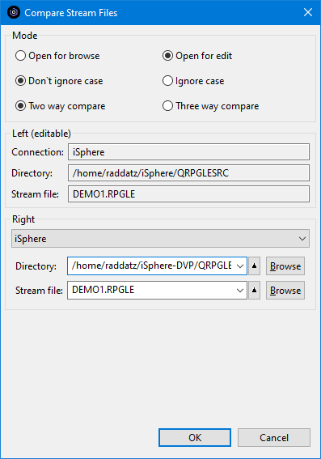
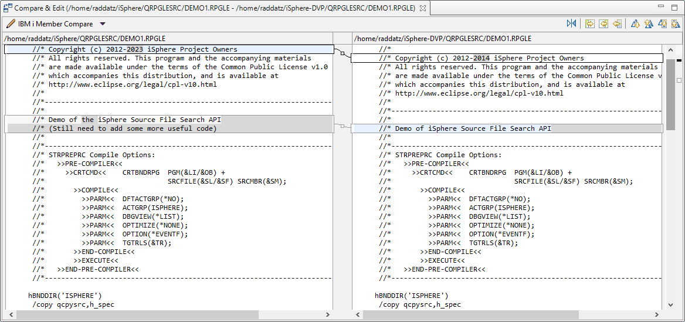
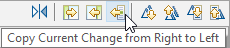
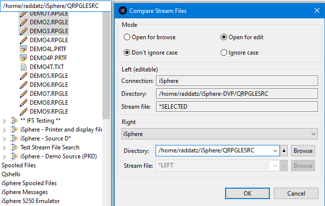
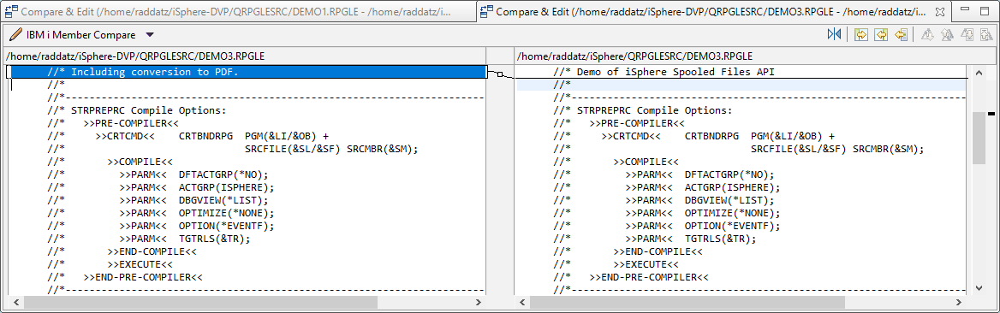

The Compare/Merge Editor allows you to compare and merge source stream files. The results of the compare are shown in left and right panes and you can easily copy some or all of the differences from the right pane to the left pane.
To compare/merge source stream files:
|  |
Set the Mode for the compare:
Note that in the "Left" section the name of the source stream file for the left pane is specified and cannot be changed.
In the "Right" section the Directory and Stream file have been
defaulted to the "Left" values. Click the [OK] button to start the compare.
|
The compare tab opens, showing the differences.

Use buttons in the top right corner buttons to move from change to change, and to copy lines from the left pane to the right pane. (Hover over each button for help text.)

If two stream files are selected at once, the first stream file is the Left stream file and the second one is the Right stream file.
The stream files can be switched with the switch stream file button located between the "Left" and "Right" stream file sections:
This is a special case where you want to compare stream files of the same name in different directories. For example, comparing stream files at the development level with those in production. You have to enter the specifications in the right pane only once.
Consider this example where we want to compare three stream files in a development directory with the same three stream files in the production directory.
We have highlighted the three stream files in the RSE view, right clicked, and clicked "iSphere Stream File Compare Editor".

In the "Left" section the stream file is set to *SELECTED and cannot be changed. This means that it will be replaced successively by the stream file names that have been selected in the RSE view, and each will be compared to the same stream file in the "Right" section.
In the "Right" section the Connection or Directory may be changed, but the name of the right stream file is set to *LEFT and cannot be changed.
To compare to the production directory, we set the "Directory" field to "../ISPHEREPRD/.." and click [OK]. A compare is run for each selected stream file and a tab opens for each stream file where there are differences. In this example, there are changes only in DEMO1 and DEMO3 so there are two compare tabs. There are no changes in DEMO2.

| Note: The information message that pops up when there are no differences between the stream files is part of the Eclipse compare framework and cannot be disabled with the current Eclipse support. |
The iSphere compare editor can be started from the context menu of a Lpex editor. Select Source -> Compare... to do so. Please notice that:
The iSphere compare editor can be started from the iSphere menu of the main menu bar. Select iSphere -> Compare Stream Files to do so.
The iSphere compare editor can be configured to load the values of the right and/or ancestor stream file of the previous compare action. The associated options can be configured on the preferences page. The rules for loading previous values are:
The history values of directories and stream files are always updated. The history values are the values that you can select from the combo box. These values can be edited with the little button at the right hand side of the combo box.
The previously used values are the connection, directory and stream file names of the last compare operation.
Both types of values are stored as independent value sets depending on the number of stream files selected for a compare operation. For example, when you star the compare editor from the iSphere menu, there are no stream files selected. But when you right-click a stream file to start a compare operation, then there is one selected stream file.